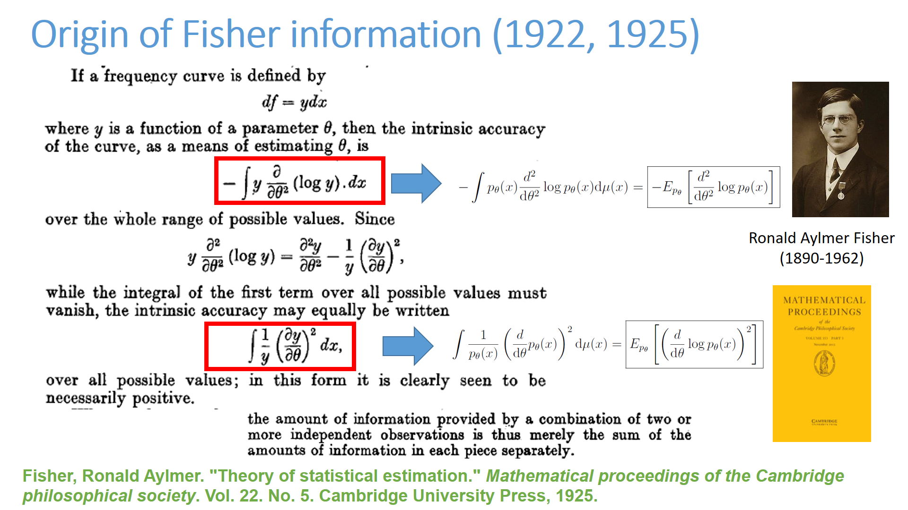
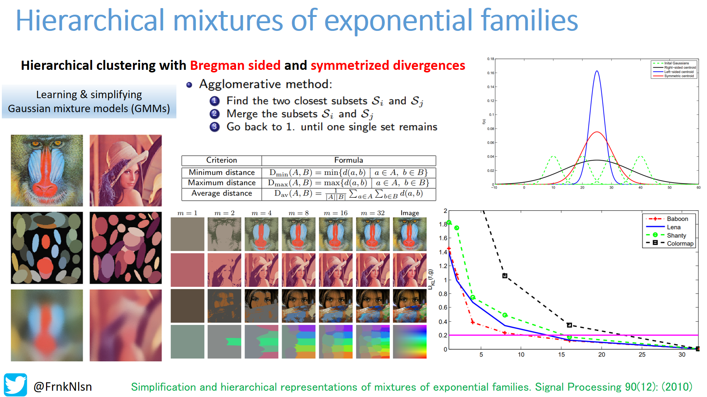
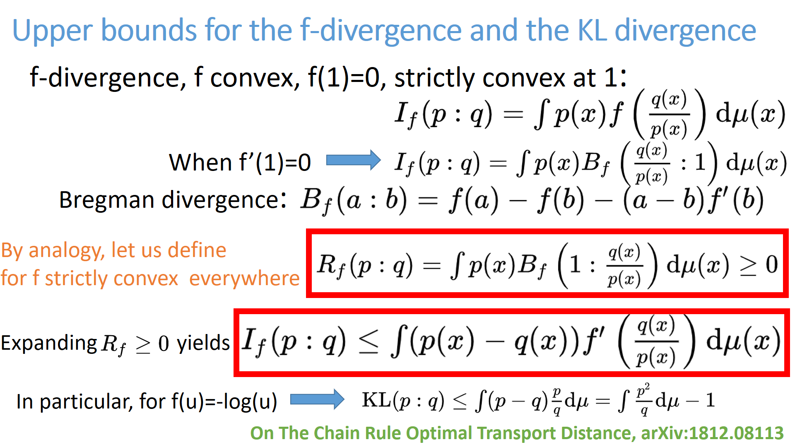
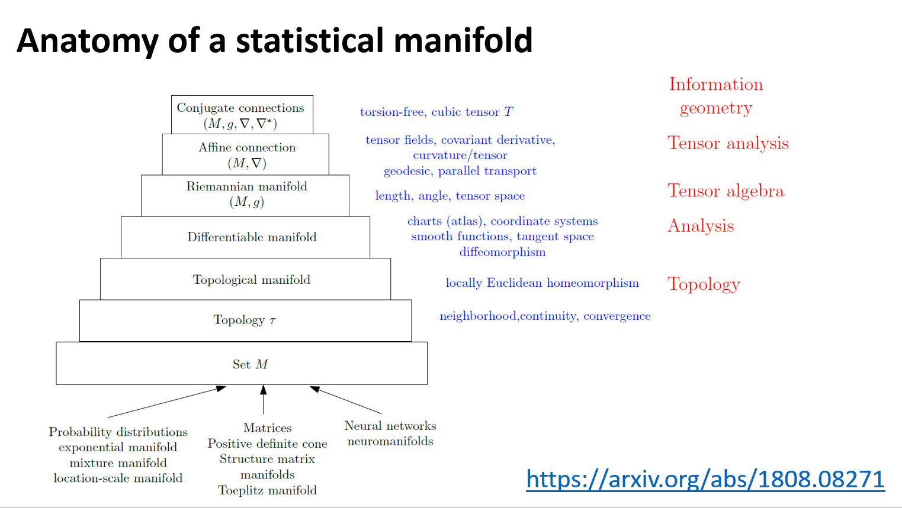

<h1>List of cards</h1>
 Click on a card and then browse previous/next card from that card.<BR>25 cards per page<BR>Card order is a random permutation.<ul><LI><A HREF="C:/Travail/WWWGitHubFrankNIELSEN/FrankNielsen.github.io/Cards/card-350.html" target="_blank"></HREF></LI>

<LI><A HREF="C:/Travail/WWWGitHubFrankNIELSEN/FrankNielsen.github.io/Cards/card-351.html" target="_blank"></HREF></LI>

<LI><A HREF="C:/Travail/WWWGitHubFrankNIELSEN/FrankNielsen.github.io/Cards/card-352.html" target="_blank"></HREF></LI>

<LI><A HREF="C:/Travail/WWWGitHubFrankNIELSEN/FrankNielsen.github.io/Cards/card-353.html" target="_blank"></HREF></LI>

<LI><A HREF="C:/Travail/WWWGitHubFrankNIELSEN/FrankNielsen.github.io/Cards/card-354.html" target="_blank"></HREF></LI>

<LI><A HREF="C:/Travail/WWWGitHubFrankNIELSEN/FrankNielsen.github.io/Cards/card-355.html" target="_blank"></HREF></LI>

<LI><A HREF="C:/Travail/WWWGitHubFrankNIELSEN/FrankNielsen.github.io/Cards/card-356.html" target="_blank"></HREF></LI>

<LI><A HREF="C:/Travail/WWWGitHubFrankNIELSEN/FrankNielsen.github.io/Cards/card-357.html" target="_blank"></HREF></LI>

<LI><A HREF="C:/Travail/WWWGitHubFrankNIELSEN/FrankNielsen.github.io/Cards/card-358.html" target="_blank"></HREF></LI>

<LI><A HREF="C:/Travail/WWWGitHubFrankNIELSEN/FrankNielsen.github.io/Cards/card-359.html" target="_blank"></HREF></LI>

<LI><A HREF="C:/Travail/WWWGitHubFrankNIELSEN/FrankNielsen.github.io/Cards/card-360.html" target="_blank"></HREF></LI>

<LI><A HREF="C:/Travail/WWWGitHubFrankNIELSEN/FrankNielsen.github.io/Cards/card-361.html" target="_blank"></HREF></LI>

<LI><A HREF="C:/Travail/WWWGitHubFrankNIELSEN/FrankNielsen.github.io/Cards/card-362.html" target="_blank"></HREF></LI>

<LI><A HREF="C:/Travail/WWWGitHubFrankNIELSEN/FrankNielsen.github.io/Cards/card-363.html" target="_blank"></HREF></LI>

<LI><A HREF="C:/Travail/WWWGitHubFrankNIELSEN/FrankNielsen.github.io/Cards/card-364.html" target="_blank"></HREF></LI>

<LI><A HREF="C:/Travail/WWWGitHubFrankNIELSEN/FrankNielsen.github.io/Cards/card-365.html" target="_blank"></HREF></LI>

<LI><A HREF="C:/Travail/WWWGitHubFrankNIELSEN/FrankNielsen.github.io/Cards/card-366.html" target="_blank"></HREF></LI>

<LI><A HREF="C:/Travail/WWWGitHubFrankNIELSEN/FrankNielsen.github.io/Cards/card-367.html" target="_blank"></HREF></LI>

<LI><A HREF="C:/Travail/WWWGitHubFrankNIELSEN/FrankNielsen.github.io/Cards/card-368.html" target="_blank"></HREF></LI>

<LI><A HREF="C:/Travail/WWWGitHubFrankNIELSEN/FrankNielsen.github.io/Cards/card-369.html" target="_blank"></HREF></LI>

<LI><A HREF="C:/Travail/WWWGitHubFrankNIELSEN/FrankNielsen.github.io/Cards/card-370.html" target="_blank"></HREF></LI>

<LI><A HREF="C:/Travail/WWWGitHubFrankNIELSEN/FrankNielsen.github.io/Cards/card-371.html" target="_blank"></HREF></LI>

<LI><A HREF="C:/Travail/WWWGitHubFrankNIELSEN/FrankNielsen.github.io/Cards/card-372.html" target="_blank"></HREF></LI>

<LI><A HREF="C:/Travail/WWWGitHubFrankNIELSEN/FrankNielsen.github.io/Cards/card-373.html" target="_blank"></HREF></LI>

<LI><A HREF="C:/Travail/WWWGitHubFrankNIELSEN/FrankNielsen.github.io/Cards/card-374.html" target="_blank"></HREF></LI>

</ul><BR> <A HREF="index14.html">Previous card page</A>&nbsp;&nbsp;&nbsp; <A HREF="index16.html">Next card page</A>
